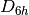

Basis Sets¶
Basis sets in Psi4 are Gaussian functions (not Slater-type functions or plane waves),
all-electron [no effective core potentials (ECPs)],
and of Gaussian94 format (for ease of export from EMSL).
Both spherical harmonic (5D/7F) and Cartesian (6D/10F) Gaussian functions are supported,
but their mixtures are not, neither within a basis set (e.g., 6D/7F) nor within a calculation
(e.g., cartesian for the orbital basis and spherical for the fitting basis).
For built-in basis sets, the correct spherical/cartesian value for PUREAM
is set internally from the orbital basis.
- Built-In Basis Sets
- Specifying basis sets
- Built-in basis sets by family
- Built-in basis sets by element
- User-Defined basis sets
- Auxiliary bases for built-in orbital basis sets
Built-In Basis Sets¶
A wide range of orbital basis sets are built into Psi4. These are
summarized in Tables Pople,
Dunning,
Dunning (Douglas-Kroll),
Karlsruhe,
and Other in Appendix Basis Sets by Family.
These tables are arranged so that columns indicate degree of
augmentation by diffuse functions (generally necessary for anions, excited
states, and noncovalent interactions) and DTQ56 indicate the  levels
available. Several intermediate levels of diffuse space between the customary
non-augmented and augmented versions have been supplied for each basis set,
including heavy-augmented and Truhlar’s [Papajak:2011:10] calendar
truncations described in Table Months Bases. Fitting bases
in Tables JKFIT,
RI, and DUAL
are available for methods incorporating density-fitting or dual-basis
approximations. JKFIT sets are appropriate for fitting
levels
available. Several intermediate levels of diffuse space between the customary
non-augmented and augmented versions have been supplied for each basis set,
including heavy-augmented and Truhlar’s [Papajak:2011:10] calendar
truncations described in Table Months Bases. Fitting bases
in Tables JKFIT,
RI, and DUAL
are available for methods incorporating density-fitting or dual-basis
approximations. JKFIT sets are appropriate for fitting  -type products,
such as encountered in SCF theory and the electrostatics/exchange terms of SAPT.
RI sets are appropriate for fitting
-type products,
such as encountered in SCF theory and the electrostatics/exchange terms of SAPT.
RI sets are appropriate for fitting  -type products, such as encountered in
MP2 and most SAPT terms. Citations for basis sets can be found in their
definition files at psi4/share/basis in the source. For basis set availability by
element and the default value for keyword PUREAM, consult
Appendix Basis Sets by Element.
-type products, such as encountered in
MP2 and most SAPT terms. Citations for basis sets can be found in their
definition files at psi4/share/basis in the source. For basis set availability by
element and the default value for keyword PUREAM, consult
Appendix Basis Sets by Element.
Mixing Basis Sets¶
While the above syntax will suffice for specifying basis sets in most cases,
the user may need to assign basis sets to specific atoms. To achieve this, a
basis block can be used. We use a snippet from the mints2 sample
input file, which performs a benzene SCF computation, to demonstrate this
feature.
basis {
assign DZ
assign C 3-21G
assign H1 sto-3g
assign C1 sto-3g
}
The first line in this block assigns the DZ basis set to all atoms. The next
line then assigns 3-21G to all carbon atoms, leaving the hydrogens with the DZ
basis set. On the third line, the hydrogen atoms which have been specifically
labelled as H1 are given the STO-3G basis set, leaving the unlabelled hydrogen
atoms with the DZ basis set. Likewise, the fourth line assigns the STO-3G
basis set to just the carbon atoms labelled C1. This bizzare example was
constructed to demonstrate the syntax, but the flexibility of the basis set
specification is advantageous, for example, when selectivily omitting diffuse
functions to make computations more tractable.
In the above example the basis sets have been assigned asymmetrically, reducing
the effective symmetry from  to  ; Psi4 will detect this
automatically and run in the appropriate point group. The same syntax can be
used to specify basis sets other than that used to define orbitals. For
example,
; Psi4 will detect this
automatically and run in the appropriate point group. The same syntax can be
used to specify basis sets other than that used to define orbitals. For
example,
set df_basis_mp2 cc-pvdz-ri
or
basis {
assign cc-pVDZ-RI df_basis_mp2
}
are both equivalent ways to set the auxiliary basis set for density fitted MP2 computations. To assign the aug-cc-pVDZ-RI to carbon atoms, the following command is used:
basis {
assign C aug-cc-pVDZ-RI df_basis_mp2
}
When most popular basis sets are being used, including Dunning and
Pople-style, the SCF, DF-MP2, and SAPT codes will chose the appropriate
auxiliary basis set automatically according to Auxiliary Basis Sets,
unless instructed otherwise by setting the auxiliary basis set in the
input. Finally, we note that the basis {...} block may also be used
for defining basis sets, as detailed in User-Defined Basis Sets.
Decontracted Basis Sets¶
Decontraction of the basis set can be useful in certain situations. In order to decontract a given basis set, simply add “-decontract” to the name of the primary basis set.
set basis cc-pvdz-decontract
Obviously this will add significantly to the computational cost of any given calculation, however it can be useful when checking the basis set dependence of a particular calculated property or in certain situations where a large basis set is critical. Currently it is recommended that a decontracted basis is always used when performing realtivistic calculations using the X2C Hamiltonian.
User-Defined Basis Sets¶
Note
No recompile of the PSI program is necessary for changes made to
files in $PSIDATADIR, including those described below.
There are three routes by which a basis set in G94 format can be introduced to Psi4‘s notice.
(1) Install new basis set file into Psi4 basis library.
Copy the basis set definitions for all elements into a blank file. Exclamation points denote comments.
As the first line of the file, add the word spherical or cartesian to indicate
whether the basis set will run in (5D/7F) or (6D/10F).
cartesian
****
H 0
S 3 1.00
3.42525091 0.15432897
0.62391373 0.53532814
0.16885540 0.44463454
****
O 0
S 3 1.00
130.7093200 0.15432897
23.8088610 0.53532814
6.4436083 0.44463454
SP 3 1.00
5.0331513 -0.09996723 0.15591627
1.1695961 0.39951283 0.60768372
0.3803890 0.70011547 0.39195739
****
Name the file with the name of the basis set and a .gbs extension,
after applying the following transformations.
- All letters lowercase
- Replace all
*withs - Replace all
+withp - Replace all
(),with_(underscores replace parentheses and commas)
For example, basis 6-31++G** is stored in psi4/share/basis/6-31ppgss.gbs, and cc-pV(D+d)Z is stored in psi4/share/basis/cc-pv_dpd_z.gbs. Only one basis set may be specified per file. Copy the new basis set file into psi4/share/basis. Request the new basis set in an input file in the usual manner.
set basis new_basis_name
(2) Use new basis set file in arbitrary location.
Prepare a basis set file exactly as above. Append the directory
containing the basis set file to the environment variable
PSIPATH.
Request the new basis set in an input file in the usual manner.
set basis new_basis_name
(3) Include new basis set in input file.
Construct for a basis set a section like the one below that includes
[basis name], PUREAM value, and element basis set
specifications. Hash signs denote comments. This format is exactly like
the stand-alone basis file except for the addition of the basis name in
brackets.
[ sto-3g ]
cartesian
****
H 0
S 3 1.00
3.42525091 0.15432897
0.62391373 0.53532814
0.16885540 0.44463454
****
O 0
S 3 1.00
130.7093200 0.15432897
23.8088610 0.53532814
6.4436083 0.44463454
SP 3 1.00
5.0331513 -0.09996723 0.15591627
1.1695961 0.39951283 0.60768372
0.3803890 0.70011547 0.39195739
****
Copy the section into a Psi4 input file and surround it with the
command basis {...}, as shown below. Multiple basis sets can be
specified by adding additional sections within the surrounding brackets.
Use assign statements to actually request the basis set. (See
mints2 for an example.)
basis {
# assign basset to all atoms and addl to hydrogens
assign basset
assign H addl
# basis set section like in snippet above goes here
[basset]
...
# additional basis set sections follow
[addl]
...
}